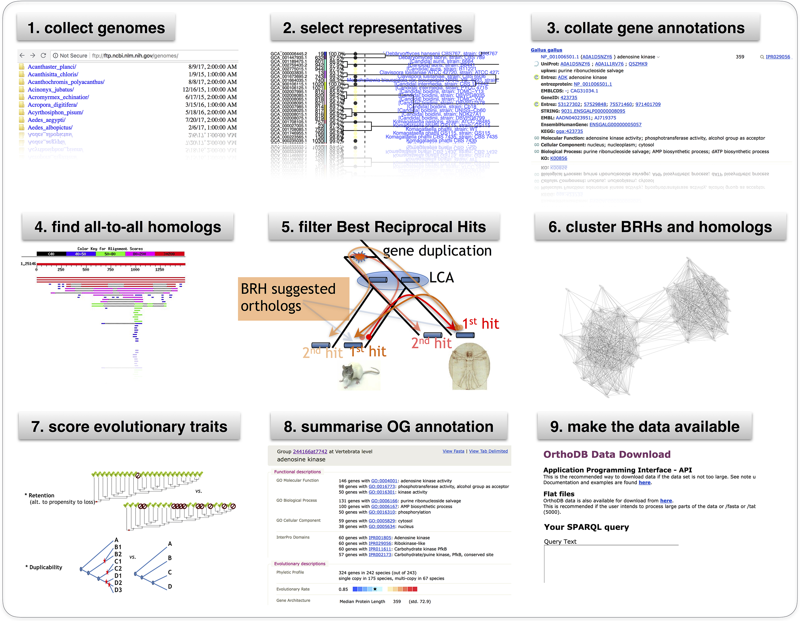

Principles and Applications of Modern DNA Sequencing
EEEB GU4055
Session 5: Phylogenetics I

Notebook 4.1: OrthoDB
Notebook 4.2: BLAST, NCBI, and APIs
BLAST is an algorithm for comparing sequences, it searches the NCBI database. The NCBI Entrez tools provide an API interface to this database. These tools have facilitated the development of complex tools like OrthoDB.

Notebook 4.2: Requests to query APIs
import requests
# search term
term = "FOXP2[GENE] AND Mammalia[ORGN] AND phylogenetic study[PROP]"
# make a request to esearch
res = requests.get(
url="https://eutils.ncbi.nlm.nih.gov/entrez/eutils/esearch.fcgi",
params={
"db": "nucleotide",
"term": term,
"sort": "Organism Name",
"retmode": "text",
"retmax": "20",
"tool": "genomics-course",
"email": "de2356@columbia.edu",
},
)
Notebook 4.2: Requests to query APIs
# returns a response object
res = requests.get(...)
# the URL is built from the params arguments to requests.get()
res.url
'https://eutils.ncbi.nlm.nih.gov/entrez/eutils/esearch.fcgi?db=nucleotide&term=FOXP2%5BGENE%5D+AND+Mammalia%5BORGN%5D+AND+phylogenetic+study%5BPROP%5D&sort=Organism+Name&retmode=text&retmax=20&tool=genomics-course&email=de2356%40columbia.edu'
Notebook 4.2: Requests to query APIs
# returns a response object
res = requests.get(...)
# the text attribute store the returned HTML
res.text
Phylogenetics I
A practical guide to inferring phylogenetic trees.